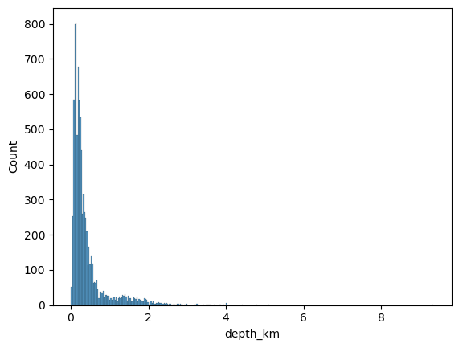
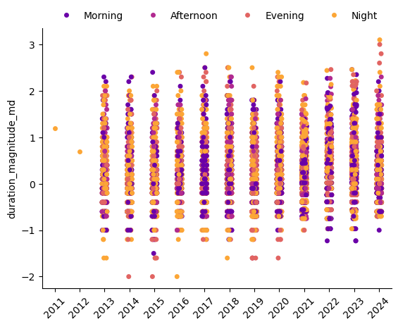
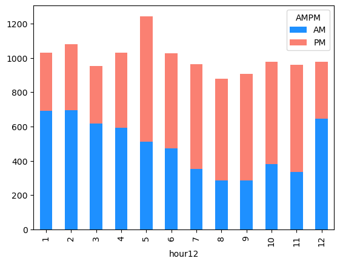
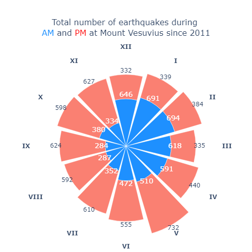

import pandas as pd
import matplotlib.pyplot as plt
import seaborn as snsTidyTuesday data for 2025-05-13
vesuvius = pd.read_csv('https://raw.githubusercontent.com/rfordatascience/tidytuesday/main/data/2025/2025-05-13/vesuvius.csv')vesuvius| event_id | time | latitude | longitude | depth_km | duration_magnitude_md | md_error | area | type | review_level | year | |
|---|---|---|---|---|---|---|---|---|---|---|---|
| 0 | 4251 | 2011-04-20T00:27:24Z | 40.818000 | 14.430000 | 0.42 | 1.2 | 0.3 | Mount Vesuvius | earthquake | revised | 2011 |
| 1 | 4252 | 2012-06-19T21:29:48Z | 40.808833 | 14.427167 | 1.31 | 0.7 | 0.3 | Mount Vesuvius | earthquake | revised | 2012 |
| 2 | 22547 | 2013-01-01T07:34:46Z | 40.822170 | 14.428000 | 0.06 | 2.2 | 0.3 | Mount Vesuvius | earthquake | preliminary | 2013 |
| 3 | 22546 | 2013-01-03T16:06:48Z | NaN | NaN | NaN | 0.2 | 0.3 | Mount Vesuvius | earthquake | preliminary | 2013 |
| 4 | 22545 | 2013-01-03T16:07:37Z | NaN | NaN | NaN | 0.2 | 0.3 | Mount Vesuvius | earthquake | preliminary | 2013 |
| ... | ... | ... | ... | ... | ... | ... | ... | ... | ... | ... | ... |
| 12022 | 40738 | 2024-12-29T23:56:51Z | 40.823000 | 14.428333 | 0.34 | -0.1 | 0.3 | Mount Vesuvius | earthquake | preliminary | 2024 |
| 12023 | 40741 | 2024-12-30T07:52:43Z | 40.823333 | 14.423500 | 0.56 | -0.1 | 0.3 | Mount Vesuvius | earthquake | preliminary | 2024 |
| 12024 | 40743 | 2024-12-30T12:52:24Z | NaN | NaN | NaN | -0.1 | 0.3 | Mount Vesuvius | earthquake | preliminary | 2024 |
| 12025 | 40744 | 2024-12-30T15:11:28Z | 40.819000 | 14.424500 | 0.55 | -0.4 | 0.3 | Mount Vesuvius | earthquake | preliminary | 2024 |
| 12026 | 40802 | 2024-12-31T17:02:32Z | 40.822000 | 14.409833 | 0.41 | 0.0 | 0.3 | Mount Vesuvius | earthquake | preliminary | 2024 |
12027 rows × 11 columns
sns.histplot(data=vesuvius,x="depth_km")
vesuvius["time"] = pd.to_datetime(vesuvius["time"])vesuvius["hour"] = vesuvius["time"].dt.hour
time_bins = [0, 5, 12, 17, 21, 24] # 0-4 -> Night, 5-11 -> Morning, etc.
time_labels = ["Night", "Morning", "Afternoon", "Evening", "Night"]vesuvius["time_of_day"] = pd.cut(vesuvius['hour'], bins=time_bins, labels=time_labels, right=False, ordered=False)vesuvius["time_of_day"]0 Night
1 Night
2 Morning
3 Afternoon
4 Afternoon
...
12022 Night
12023 Morning
12024 Afternoon
12025 Afternoon
12026 Evening
Name: time_of_day, Length: 12027, dtype: category
Categories (4, object): ['Afternoon', 'Evening', 'Morning', 'Night']vesuvius["year"].unique()array([2011, 2012, 2013, 2014, 2015, 2016, 2017, 2018, 2019, 2020, 2021,
2022, 2023, 2024], dtype=int64)bin_edges = [-float('inf'), 1, 2, 3, 5, 7, float('inf')]
vesuvius["depth_bins"] = pd.cut(vesuvius['depth_km'], bins=bin_edges)vesuvius["depth_bins"].value_counts()depth_bins
(-inf, 1.0] 7777
(1.0, 2.0] 648
(2.0, 3.0] 142
(3.0, 5.0] 25
(5.0, 7.0] 1
(7.0, inf] 1
Name: count, dtype: int64vesuvius.head()| event_id | time | latitude | longitude | depth_km | duration_magnitude_md | md_error | area | type | review_level | year | hour | time_of_day | depth_bins | |
|---|---|---|---|---|---|---|---|---|---|---|---|---|---|---|
| 0 | 4251 | 2011-04-20 00:27:24+00:00 | 40.818000 | 14.430000 | 0.42 | 1.2 | 0.3 | Mount Vesuvius | earthquake | revised | 2011 | 0 | Night | (-inf, 1.0] |
| 1 | 4252 | 2012-06-19 21:29:48+00:00 | 40.808833 | 14.427167 | 1.31 | 0.7 | 0.3 | Mount Vesuvius | earthquake | revised | 2012 | 21 | Night | (1.0, 2.0] |
| 2 | 22547 | 2013-01-01 07:34:46+00:00 | 40.822170 | 14.428000 | 0.06 | 2.2 | 0.3 | Mount Vesuvius | earthquake | preliminary | 2013 | 7 | Morning | (-inf, 1.0] |
| 3 | 22546 | 2013-01-03 16:06:48+00:00 | NaN | NaN | NaN | 0.2 | 0.3 | Mount Vesuvius | earthquake | preliminary | 2013 | 16 | Afternoon | NaN |
| 4 | 22545 | 2013-01-03 16:07:37+00:00 | NaN | NaN | NaN | 0.2 | 0.3 | Mount Vesuvius | earthquake | preliminary | 2013 | 16 | Afternoon | NaN |
Annual number of tremors vs duration
fig, ax = plt.subplots()
hue_order = ["Morning", "Afternoon", "Evening", "Night"]
color_map = ["lightblue", "dodgerblue", "lightgrey", "grey"]
colors = {x: color_map[ind] for ind, x in enumerate(hue_order)}
sns.stripplot(data=vesuvius, x="year", y="duration_magnitude_md", \
hue='time_of_day', hue_order=hue_order, palette="plasma")
plt.xticks(rotation=45)
plt.xlabel("")
plt.legend(
title='',
loc='upper center',
bbox_to_anchor=(0.5, 1.1),
ncol=4,
frameon=False
)
sns.despine()
Earthquakes at different times of the day
vesuvius["hour12"] = vesuvius["time"].dt.strftime("%I").astype(int)
vesuvius["AMPM"] = vesuvius["time"].dt.strftime("%p") vesuvius_grp = vesuvius.groupby(["hour12", "AMPM"]).size().unstack(fill_value=0)
vesuvius_grp| AMPM | AM | PM |
|---|---|---|
| hour12 | ||
| 1 | 691 | 339 |
| 2 | 694 | 384 |
| 3 | 618 | 335 |
| 4 | 591 | 440 |
| 5 | 510 | 732 |
| 6 | 472 | 555 |
| 7 | 352 | 610 |
| 8 | 287 | 592 |
| 9 | 284 | 624 |
| 10 | 380 | 598 |
| 11 | 334 | 627 |
| 12 | 646 | 332 |
vesuvius_grp.plot(kind="bar", stacked=True, color=['dodgerblue', 'salmon'])
Polar coordinates
import plotly.graph_objects as go
import romanvesuvius_grp['angle'] = vesuvius_grp.index * 30
# Create polar plot with two bar traces: AM and PM
fig = go.Figure()
# AM bars
fig.add_trace(go.Barpolar(
r=vesuvius_grp['AM'],
theta=vesuvius_grp['angle'],
name='AM',
marker_color='dodgerblue',
hovertemplate='count = %{r}<br>time = %{theta} AM<extra></extra>'
))
# PM bars
fig.add_trace(go.Barpolar(
r=vesuvius_grp['PM'],
theta=vesuvius_grp['angle'],
name='PM',
marker_color='salmon',
hovertemplate='count = %{r}<br>time = %{theta} PM<extra></extra>'
))
# Layout
fig.update_layout(
title={
'text': 'Total number of earthquakes during <br><span style="color:dodgerblue;">AM</span> and <span style="color:red;">PM</span> at Mount Vesuvius since 2011',
'font': {
'size': 16
},
"x" : 0.5,
},
polar=dict(
angularaxis=dict(direction='clockwise', rotation=90, tickmode='array',
tickvals=np.arange(30, 361, 30),
ticktext=[f"<b>{roman.toRoman(h)}</b>" for h in range(1, 13)],
showline=False, showgrid=False),
radialaxis=dict(showticklabels=False, ticks='', showline=False, showgrid=False)
),
showlegend=False,
template='plotly_white',
width=500,
height=500,
margin=dict(l=0, r=0, t=100, b=20)
)
#fig.write_image("Vesuvius.png")
fig.show()
There is no direct way to add labels to bars in radial axis. As a workaround, add scatterplot and show only text.
vesuvius_grp['angle'] = vesuvius_grp.index * 30
# Create polar plot with two bar traces: AM and PM
fig = go.Figure()
# AM bars
fig.add_trace(go.Barpolar(
r=vesuvius_grp['AM'],
theta=vesuvius_grp['angle'],
name='AM',
marker_color='dodgerblue',
hovertemplate='count = %{r}<br>time = %{theta} AM<extra></extra>'
))
# PM bars
fig.add_trace(go.Barpolar(
r=vesuvius_grp['PM'],
theta=vesuvius_grp['angle'],
name='PM',
marker_color='salmon',
hovertemplate='count = %{r}<br>time = %{theta} PM<extra></extra>'
))
# Layout
fig.update_layout(
title={
'text': 'Total number of earthquakes during <br><span style="color:dodgerblue;">AM</span> and <span style="color:red;">PM</span> at Mount Vesuvius since 2011',
'font': {
'size': 16
},
"x" : 0.5,
},
polar=dict(
angularaxis=dict(direction='clockwise', rotation=90, tickmode='array',
tickvals=np.arange(30, 361, 30),
ticktext=[f"<b>{roman.toRoman(h)}</b>" for h in range(1, 13)],
showline=False, showgrid=False),
radialaxis=dict(showticklabels=False, ticks='', showline=False, showgrid=False)
),
showlegend=False,
template='plotly_white',
width=500,
height=500,
margin=dict(l=0, r=0, t=100, b=20)
)
fig.add_trace(go.Scatterpolar(
r=vesuvius_grp['AM']+50,
theta=vesuvius_grp['angle'],
mode="text",
text=vesuvius_grp['AM'],
textposition="middle center",
textfont=dict(size=14, color="white"),
name="AM Labels",
hoverinfo="skip",
showlegend=False
))
fig.add_trace(go.Scatterpolar(
r=vesuvius_grp['AM']+vesuvius_grp['PM']+50,
theta=vesuvius_grp['angle'],
mode="text",
text=vesuvius_grp['PM'],
textposition="middle center",
name="PM Labels",
hoverinfo="skip",
showlegend=False
))
#fig.write_image("Vesuvius_labels.png")
fig.show()